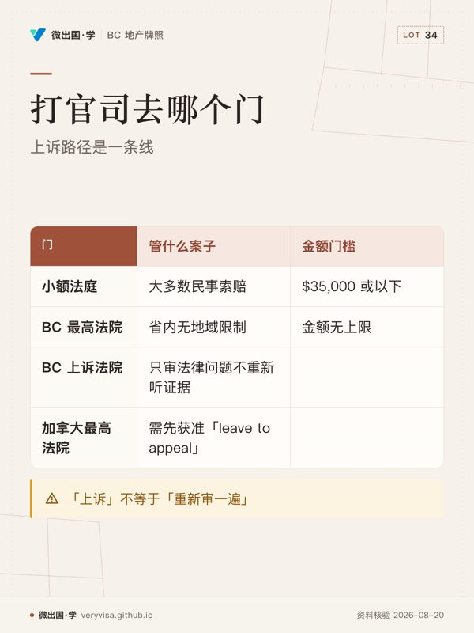

🃏 Flashcards · 3 闪卡 · 3 张 🖼 Slides · 2 幻灯 · 2 页 ✍️ Questions · 11 刷题 · 11 道
法律基础与产权 law-foundation P2 稳住 P2 Hold steady
ZH EN ZH + EN
先看这一章怎么考 First, how this chapter is tested
情境分流题（去哪个门）：给出纠纷金额门槛（如 $5,000、$35,000、$50,000 或无上限）与案由（如一般小额债务、共管物业费、买卖违约、车祸或租客歧视），直接考该去 CRT、小额法庭、BC 最高法院还是 BC 人权裁判庭。 Scenario-based forum routing questions: Given monetary dispute thresholds (such as $5,000, $35,000, $50,000, or unlimited) and causes of action (such as general small debts, strata fees, purchase contract breaches, motor vehicle accidents, or tenant discrimination), directly testing whether the dispute belongs in the CRT, Small Claims Court, the Supreme Court of British Columbia, or the BC Human Rights Tribunal. 救济方式与优先顺位辨析题：用卖家毁约拒不过户或侵权场景，考普通法损害赔偿（damages）与衡平法强制履行（specific performance）/禁制令（injunction）的区别、冲突时谁优先，以及原告拖延起诉对衡平救济的影响。 Remedies and priority analysis questions: Using scenarios such as seller breach of contract refusing title transfer or tort claims, testing the distinctions between common law damages and equitable remedies (specific performance and injunctions), which body of law prevails in a conflict, and the effect of unreasonable plaintiff delay on eligibility for equitable relief. 先例与上诉机制概念题：考 stare decisis（遵循先例）的核心目的是可预测性、外省或外国判例仅有说服力（persuasive）而无约束力（binding）、法官如何通过区分事实（distinguish）避开旧先例，以及上诉法院只审法律问题不重听证据。 Precedent and appellate mechanism concept questions: Testing that the core purpose of stare decisis is predictability, that out-of-province or foreign judicial decisions are merely persuasive rather than binding, how judges distinguish cases based on material factual differences to depart from prior precedents, and that appellate courts review only legal errors without re-hearing witness evidence. 最常丢分的陷阱（看到题干信号就警觉） Traps that cost the most marks (watch for the signal in the stem)
先例必死套与跨省强制陷阱 Rigid precedent application and out-of-province binding authority trap 题干出现「must follow a decision from another province」或「cannot depart from an earlier precedent even when material facts differ」。 The question stem states that a judge must follow a decision from another province or cannot depart from an earlier precedent even when material facts differ. 衡平救济当成法定必给权利 Treating equitable remedies as an automatic statutory entitlement 题干出现「automatic right to specific performance」或描述原告「waited an unreasonable length of time before seeking equitable relief」。 The question stem mentions an automatic right to specific performance or describes a plaintiff who waited an unreasonable length of time before seeking equitable relief. 上诉等于重打官司重新举证 Assuming an appeal means a brand-new trial with fresh evidence 题干出现「Court of Appeal」「Supreme Court of Canada」并搭配「call new witnesses」「re-hear all evidence」。 The question stem mentions Court of Appeal or Supreme Court of Canada paired with calling new witnesses or re-hearing all evidence. 本章考点页：导图、要点表、7 道带逐项解析的练习 →
本章地位 ：这是整本考试口径的地基章——后面每一章讲的牌照制度、合同规则、代理责任，
都要先落在「这是普通法定的还是成文法定的」「出了纠纷走哪个门」这两个坐标上才立得住。
考试口径（©2020）在这一章讲的是原理 ，原理这五年基本没变；但原理之下的具体门槛数字
——法院与仲裁机构管辖范围、人权保护理由清单——2020 年之后确实动过。
核实日期：2026-09-05 ，出处见文末源表。
一、法律从哪里来：两条源头，一条互补规则 本节回答 This section answers 考先例的作用、跨省判例效力及如何区分事实避开旧先例 Tests the purpose of stare decisis, the persuasive effect of out-of-province decisions, and how distinguishing material facts allows judges to depart from prior precedent.
BC 的法律有两个源头：普通法（common law） 和成文法（statute law） 。
普通法 是法官在判案中一点点「造」出来的法律，靠先例累积。这套体系源于 1066 年诺曼征服后的英格兰，
被英国殖民带到加拿大，至今仍在演化。让普通法有可预测性的核心概念是 stare decisis （遵循先例）——
字面意思是「让先前的判决站住」：法院一旦就某个法律问题下过判决，后面遇到实质相同的事实，
就应该按同一个原则判。这条规矩不是为了公平本身，而是为了让人能预判自己行为的法律后果 ——
你签合同、做交易时，靠的就是「这条规则昨天怎么判，今天大概率还这么判」这份确定性。
先例的分量分层级 ：最高法院（Supreme Court of Canada）的判决分量最重；各省上诉法院
（Court of Appeal）的判决对本省下级法院有约束力，对其他省份的下级法院有说服力但不约束；
省级初审法院的判决对未来同级案件有参考作用。找不到加拿大先例时，法官可以参考英国或其他普通法
联邦国家的判例——但这些判例本身没有法律约束力，除非被加拿大法院采纳。
ℹ️
"Stare decisis" 不是「照抄上一个判决」
适用先例的关键动作是区分（distinguish） ：法官要先判断上一个案子里哪些事实是判决的关键，
再对比眼前案子的事实有没有实质差异。有实质差异，法官可以把旧先例「区分」掉、不受其约束。
这一步不是走过场——考试爱在这里设陷阱，把"先例存在"直接等同于"先例必然适用"。
节末检索小测 · 先别往回翻，凭记忆作答 Quick recall check: answer from memory before scrolling back
A trial judge in the Supreme Court of British Columbia is hearing a dispute over a commercial lease. One lawyer cites a recent decision from another province's Court of Appeal on a similar clause, while the other lawyer cites an older British Columbia Court of Appeal decision whose key facts differ materially from the current case. How should the judge treat these two authorities?
BC 最高法院的一名初审法官正在审理一起商业租约纠纷。一方律师援引了外省上诉法院近期就类似条款作出的判决，另一方律师援引了 BC 上诉法院一项较早的判决，但该旧判例的关键事实与本案存在实质性差异。法官应如何对待这两项判例？
a Both decisions are strictly binding on the judge under the doctrine of stare decisis because both come from provincial appellate courts. ✗ 错在「先例必死套与跨省强制陷阱」：遵循先例（stare decisis）只要求本省下级法院受本省上诉法院（Court of Appeal）及加拿大最高法院判决的约束，外省上诉法院的判决对 BC 法院仅有说服力（persuasive）而无强制约束力。 Incorrect, falling into the rigid precedent and out-of-province binding authority trap. Stare decisis requires lower courts in British Columbia to follow decisions of the BC Court of Appeal and the Supreme Court of Canada; appellate decisions from other provinces are merely persuasive and carry no binding authority.
b The other province's appellate ruling is persuasive only, and the judge may distinguish the BC appellate case because its material facts differ. ✓ 正确：其他省份上诉法院的判决对本省下级法院只有说服力（persuasive）但不具约束力；而面对本省上诉法院的先例，当眼前案件的关键事实与旧案存在实质差异时，法官可以通过区分（distinguish）不适用该先例。 Correct. Appellate decisions from other provinces are persuasive only and not binding on BC courts. When dealing with a BC Court of Appeal precedent, a trial judge may distinguish the earlier case and decline to follow it if its material facts differ from the present case.
c The out-of-province appellate decision is binding because it is more recent, whereas the older British Columbia decision has automatically expired. ✗ 错在编造「判例自动过期」规则：普通法（common law）先例不会因为年代较久而自动失效，外省上诉法院的判例也不会因为时间更新就对 BC 法院产生强制约束力。 Incorrect, inventing a rule that precedents automatically expire. Common law precedents do not lose their legal force merely through age, nor does a newer out-of-province appellate decision become binding in British Columbia.
d Neither decision can be considered because Canadian judges may only apply statute law when resolving commercial lease disputes. ✗ 错在否定普通法渊源：BC 法律由普通法（common law）与成文法（statute law）共同构成，法官在成文法未作完整规定时必须结合普通法先例审理案件。 Incorrect, denying common law as a source of law. The law in British Columbia is composed of both common law and statute law, and judges must apply common law precedents where statutes do not fully govern the dispute.
看答案与每个选项的解析 Show the answer and why each option is right or wrong 答案 Answer ：b
二、普通法太死板，衡平法来纠偏 本节回答 This section answers 考普通法与衡平法冲突谁优先及衡平救济的自由裁量性质 Tests which body of law prevails when common law and equity conflict, and the discretionary nature of equitable remedies. 本章考题 1 Question 1
都铎与斯图亚特王朝时期，普通法的先例体系变得非常僵化，经常判出不公平的结果。于是打官司的人开始
向国王申诉，国王最初亲自受理，后来把这个职能交给了大法官（chancellor），逐渐发展出一套独立于
普通法法院之外的衡平法（equity） 体系，专门审理讲"公平"而不是讲"死规则"的案子——这套法院
被称为衡平法院（courts of chancery / courts of equity）。衡平法不是要推翻普通法 ，
而是矫正普通法过于严苛的地方，本质上是一种自由裁量的救济。
1870 年代，英国议会通过《司法法》（Judicature Acts），把衡平法院与普通法法院合并 成同一套法院系统。
今天在 BC（以及除魁北克外的加拿大各省），同一个法官既能给普通法上的损害赔偿（damages） ，
也能给衡平法上的衡平救济 ，比如：
强制履行（specific performance） ：法院命令被告按合同约定实际完成交易（比如把房子过户给买家），
而不是只赔钱了事；禁制令（injunction） ：命令一方停止（或去做）某件事的法院令，其中要求"必须做某事"的叫
强制性禁制令（mandatory injunction） 。
两套规则冲突时，衡平法优先。 而且衡平救济是法院自由裁量 给的，不是原告想要就一定拿得到——
比如原告拖延太久才起诉主张强制履行，法院可以以此为由拒绝给这项衡平救济（衡平法有一句老话：
打衡平官司的人得"脚底抹油"，动作慢了就可能丧失救济资格）。
🔧
卖家反悔时，买家能不能"逼"他过户
一个常见场景：卖家签了买卖合同后反悔、拒绝签过户文件。买家起诉，法院除了判卖家赔钱，
还可以判强制履行 ——命令卖家必须按合同把房子过户给买家。这正是普通法救济（赔钱）
与衡平法救济（逼着做）并存的实例：买家想要的往往不是钱，是那套房子本身。
节末检索小测 · 先别往回翻，凭记忆作答 Quick recall check: answer from memory before scrolling back
Following the merger of common law courts and courts of equity under the Judicature Acts in the 1870s, how does a British Columbia court handle a case where a common law rule and an equitable principle point to conflicting outcomes?
在 1870 年代《司法法》（Judicature Acts）将普通法法院与衡平法院合并之后，如果某起案件中普通法规则与衡平法原则指向相冲突的结果，BC 法院应如何处理？
a The common law rule prevails because common law is the older foundation of the English legal system. ✗ 错在颠倒优先顺位：虽然普通法（common law）起源更早，但衡平法（equity）正是为了矫正普通法的僵化与严苛而产生，两套规则冲突时衡平法优先。 Incorrect, reversing priority. Although the common law developed earlier, equity arose specifically to mitigate the rigidity and harshness of common law rules; where the two systems conflict, equitable principles prevail.
b The plaintiff must file separate lawsuits before two different courts to obtain both damages and an injunction. ✗ 错在忽略法院合并事实：自 1870 年代《司法法》（Judicature Acts）合并两套法院系统后，今天 BC 的同一个法官在同一场诉讼中既能判给普通法损害赔偿（damages），也能给衡平救济如禁制令（injunction）。 Incorrect, ignoring the merger of courts under the Judicature Acts of the 1870s. Modern British Columbia judges preside over a unified court system and have jurisdiction to grant both common law damages and equitable remedies such as injunctions in the same action.
c The equitable principle prevails, and the same judge has authority to grant either common law damages or discretionary equitable remedies. ✓ 正确：当普通法与衡平法（equity）规则发生冲突时，衡平法优先；且合并后的同一套法院系统中，同一个法官既有权判给普通法上的损害赔偿（damages），也有权自由裁量授予强制履行（specific performance）或禁制令（injunction）等衡平救济。 Correct. Where common law and equitable rules conflict, equity prevails. In the unified court system, the same judge has full authority to award common law damages or grant discretionary equitable relief such as specific performance or an injunction.
d The court must award specific performance automatically whenever the plaintiff prefers property transfer over monetary damages. ✗ 错在「衡平救济当成法定必给权利」陷阱：强制履行（specific performance）等衡平救济属于法院自由裁量（discretionary）的救济，并非原告想要就必然获得。 Incorrect, falling into the trap of treating equitable relief as an automatic right. Equitable remedies such as specific performance are discretionary and are never awarded automatically merely because the plaintiff requests them.
看答案与每个选项的解析 Show the answer and why each option is right or wrong 答案 Answer ：c
三、成文法：三级政府各管一段，且常常是用来"改"普通法的 本节回答 This section answers 考联邦与省立法权划分、市级bylaw来源及成文法改普通法 Tests the division of powers between federal and provincial governments, the origin of municipal bylaw authority, and how statute law modifies the common law. 本章考题 2 Question 2
成文法（statute law） 是立法机关制定的法律：联邦议会、省议会、市议会各有自己的立法权，
这个权力划分写在《宪法》里（Constitution Act, 1867）。
图：法律基础与产权——普通法、成文法与你会撞上的三个门
联邦 专属立法权覆盖：银行、破产、货币、邮政、婚姻与离婚、刑事、专利与版权、航运、渔业、国防等；省 负责：财产与公民权利（property and civil rights）、市政机构、司法行政、教育，
以及一般属于纯地方或私人性质的事项；联邦剩余权力（residual power） ：宪法没具体列明的事项，立法权归联邦；市 本身不是 宪法直接授权的一级立法机关——它的权力是从省的权力里"切出来"分下去的，
市议会靠这份被切出来的权力制定bylaw （街道交通规则、建筑法规等地方性事项）。
这一条对地产持牌人是根本性的 ：地产交易、合同、代理关系，落在「财产与公民权利」这一省级篮子里
——所以 RESA、Property Law Act、Land Title Act 这些管地产的法律都是省法 ，不是联邦法；
市一级管的是分区（zoning）、建筑许可这类地方事项，权力来自省的授权，不是宪法直接给的。
成文法最常见的角色是改变普通法 ，或者在普通法完全没有规定的领域另立规则。考试口径举的例子今天依然
成立：普通法里从来没有"做地产经纪必须持牌"这条规矩，这个要求是《地产服务法》(RESA)
用成文法创设出来的（RESA 现行框架见本课第 2 讲）。法官判案时的顺序也因此固定：先看有没有制定法
回答这个问题 ，有的话按先例解读那部法律；没有制定法、或制定法只答了一部分，才转向普通法先例找答案。
节末检索小测 · 先别往回翻，凭记忆作答 Quick recall check: answer from memory before scrolling back
Under Canada's constitutional division of powers, if a newly emerging subject matter is not specifically listed under either federal or provincial heads of power in the Constitution Act, 1867, which level of government holds the legislative authority over it?
根据加拿大的宪法分权原则，如果某项新出现的事项未在《1867 年宪法》（Constitution Act, 1867）的联邦或省级立法权清单中具体列明，哪一级政府拥有对该事项的立法权？
a The federal government, because residual power over unlisted matters belongs to Parliament. ✓ 正确：根据《宪法》（Constitution Act, 1867），宪法未具体列明的事项归属联邦剩余权力（residual power），其立法权由联邦议会行使。 Correct. Under the Constitution Act, 1867, matters not specifically enumerated in the federal or provincial heads of power fall under the federal residual power and are subject to the legislative authority of Parliament.
b The provincial legislature, because all unlisted matters fall automatically into property and civil rights. ✗ 错在把省级「财产与公民权利」（property and civil rights）当成兜底剩余权力：虽然地产交易、合同与代理关系属于省管辖的财产与公民权利，但宪法未列明事项的剩余权力（residual power）归联邦而非省。 Incorrect, mistaking provincial property and civil rights for residual authority. While real estate transactions, contracts, and agency fall under provincial property and civil rights, the residual power over unlisted matters belongs exclusively to the federal government.
c Municipal councils, because local governments hold independent constitutional authority over new local issues. ✗ 错在「市级权力来源」陷阱：市（municipality）并不是《宪法》直接授权的一级立法机关，市议会制定地方法规（bylaw）的权力是从省的立法权里切分授权而来的。 Incorrect, misunderstanding the source of municipal power. Municipalities are not constitutional law-making bodies under the Constitution Act, 1867; municipal authority to enact local bylaws is entirely delegated by the provincial legislature.
d The common law courts exclusively, because legislatures cannot pass statute law on subjects where no precedent exists. ✗ 错在颠倒成文法（statute law）与普通法的关系：成文法最常见的角色恰恰是在普通法完全没有规定的领域另立规则，或者修改既有的普通法规则。 Incorrect, misrepresenting the relationship between statute law and common law. A primary function of statute law is precisely to enact rules in areas unaddressed by common law or to amend existing common law rules.
看答案与每个选项的解析 Show the answer and why each option is right or wrong 答案 Answer ：a
四、公法与私法：两种"官司"的性质不一样 本节回答 This section answers 考公法与私法的分类标准及持牌人日常业务与监管的归属 Tests the classification criteria between public and private law and whether licensee business activities and regulatory frameworks fall under each.
BC 法律体系里，事项分两大类：
私法（private law / civil law） ：处理个人与个人之间、与国家没有直接关系的纠纷——
违约、离婚、侵权诉讼都是私法事项；公法（public law） ：处理宪法与政府机构、个人与国家的关系，以及国家有直接利益的个人间关系——
比如税法、宪法、刑法。
对地产持牌人来说，日常打交道最多的是私法 ，尤其是不动产法、合同法、代理关系（agency）与
侵权法（tort）——买卖合同起草与审核、代理关系的建立与终止，这些都是私法领域的日常工作。
但持牌人的牌照本身 ——谁需要牌照、违规怎么处分——是 RESA 这部公法性质的监管框架管的
（RESA 兼具「谁能执业」的公法属性与「怎么打官司」时涉及的私法关系）。
节末检索小测 · 先别往回翻，凭记忆作答 Quick recall check: answer from memory before scrolling back
Which of the following matters encountered by a real estate licensee is primarily governed by private law rather than public law?
地产持牌人遇到的下列事项中，哪一项主要受私法（private law）而非公法（public law）调整？
a A civil dispute arising from a breach of an agency contract or tort claim between private parties. ✓ 正确：私法（private law / civil law）处理个人与个人之间、与国家没有直接关系的纠纷，合同违约、代理关系（agency）、不动产法与侵权法（tort）都是持牌人日常最常接触的私法领域。 Correct. Private law (civil law) resolves disputes between private individuals without direct government involvement. Breach of contract, agency relationships, real property law, and tort law are the primary private law areas encountered by licensees.
b A constitutional challenge regarding whether a federal tax statute exceeds Parliament's legislative authority. ✗ 错在混淆公私法边界：宪法（constitutional law）与税法（tax law）涉及政府机构权力与个人同国家的关系，属于典型的公法（public law）事项。 Incorrect, confusing public and private law boundaries. Constitutional law and tax law govern governmental powers and the relationship between individuals and the state, forming classic areas of public law.
c A criminal prosecution against an individual accused of fraud during a mortgage transaction. ✗ 错在把刑事追诉当成私法：刑法（criminal law）涉及国家有直接利益的社会秩序维护，属于公法（public law）范畴。 Incorrect, classifying criminal prosecutions under private law. Criminal law involves breaches of public order in which the state has a direct societal interest, placing it firmly within public law.
d A regulatory proceeding to discipline an unlicensed person under the public regulatory framework of the Real Estate Services Act. ✗ 错在忽略牌照监管的公法属性：虽然持牌人日常办交易主要用私法，但《地产服务法》（RESA）关于「谁需要牌照、违规怎么处分」的监管框架具有公法（public law）性质。 Incorrect, overlooking the public regulatory nature of licensing. While licensee transactions involve private law, the regulatory framework under the Real Estate Services Act governing licensing qualification and discipline is public law.
看答案与每个选项的解析 Show the answer and why each option is right or wrong 答案 Answer ：a
五、打官司去哪个门：法院层级与门槛金额 本节回答 This section answers 考小额法庭$35,000门槛、地域限制及上诉不重听证据 Tests the $35,000 Small Claims Court monetary limit, territorial jurisdiction rules, and the principle that appellate courts do not re-hear evidence.
BC 的民事法院系统有两级初审法院（courts of original jurisdiction） ：
超过小额法庭的金额上限，原告可以选择减少诉求金额 留在小额法庭，或者直接去最高法院起诉。
上诉路径 是一条线：小额法庭 → BC 最高法院（先由法官审有没有法律或事实错误，允许上诉才会
下令重审，重审时全部证据要重新举证）→ BC 上诉法院（Court of Appeal，通常 3 名法官，重大先例
可能推翻时用 5 名，多数意见定案，只审法律问题不重新听证据）→ 加拿大最高法院（需先获准
"leave to appeal"，5–9 名法官，同样不重新听证据，多数意见定案）。
⚠️
"上诉"不等于"重新审一遍"
除了小额法庭案件被 BC 最高法院准许重审（trial de novo，走一次全新的审理）之外，
上诉法院系统不重新听取证据 ，只审查原审法官适用法律有没有错误。
把"上诉"想成"再打一次官司"是这一节最容易丢分的地方。
这一节的金额门槛在考试口径定稿后没有变过 ——$35,000 这个数字来自《Small Claims Act》
s.3 授权、由《Small Claims Court Monetary Limit Regulation》(B.C. Reg. 179/2005) 现行第 1 条
明定，最后一次调整是 2017-06-01（从旧的 $25,000 上调到 $35,000），此后再没动过。
2026 年核实的结果是：这个数字没变 ，考试口径写对了。
节末检索小测 · 先别往回翻，凭记忆作答 Quick recall check: answer from memory before scrolling back
A creditor wishes to sue a debtor in British Columbia for an unpaid personal loan that exceeds the $35,000 Small Claims Court monetary limit. Which of the following statements accurately describes the creditor's options in the provincial court system?
一名债权人希望在 BC 省就一笔超过小额法庭 $35,000 金额上限的未偿还个人借款起诉债务人。下列哪项陈述准确描述了该债权人在省法院系统中的可选路径？
a The creditor can file the full claim above $35,000 in Small Claims Court as long as the debtor resides in that court's territorial jurisdiction. ✗ 错在超额起诉：小额法庭（Small Claims Court）的管辖金额上限为 $35,000 或以下，不能直接就超过 $35,000 的全部金额在小额法庭立案内审。 Incorrect, attempting to claim an amount exceeding the statutory cap. Small Claims Court jurisdiction is capped at $35,000, and a plaintiff cannot sue for the full amount of a claim exceeding $35,000 in Small Claims Court.
b The creditor must initiate the lawsuit directly in the British Columbia Court of Appeal because the claim exceeds $35,000. ✗ 错在混淆初审法院与上诉法院：BC 上诉法院（Court of Appeal）是审理上诉法律问题的法院，不是初审法院（court of original jurisdiction），超额案件的初审应去 BC 最高法院。 Incorrect, confusing appellate and trial courts. The BC Court of Appeal hears appeals on points of law rather than acting as a court of original jurisdiction; trial claims exceeding $35,000 must originate in the Supreme Court of British Columbia.
c The creditor is barred from Small Claims Court unless the claim is $25,000 or less under the current monetary regulation. ✗ 错在记成 2017-06-01 之前的旧门槛：小额法庭（Small Claims Court）的金额上限早已从旧的 $25,000 上调至 $35,000，此后未变。 Incorrect, referring to the pre-June 1, 2017 monetary threshold. The Small Claims Court limit was raised from $25,000 to $35,000 in 2017 and has remained unchanged.
d The creditor may either reduce the claim to $35,000 to proceed in Small Claims Court or sue for the full amount in the Supreme Court of British Columbia. ✓ 正确：小额法庭（Small Claims Court）的管辖上限是 $35,000，超过该金额时，原告可以选择减少诉求金额至 $35,000 留在小额法庭，或者直接向无金额上限的 BC 最高法院（Supreme Court of British Columbia）起诉。 Correct. Small Claims Court has a monetary cap of $35,000. When a claim exceeds this amount, the plaintiff may either abandon the excess to stay within the $35,000 Small Claims limit or commence an action for the full amount in the Supreme Court of British Columbia.
看答案与每个选项的解析 Show the answer and why each option is right or wrong 答案 Answer ：d
六、CRT：诉讼之外，多出来的一条网上裁决路 本节回答 This section answers 考CRT四类管辖与金额上限、排除事项及不服救济路径 Tests the four categories of CRT jurisdiction, monetary caps, excluded matters, and appeal remedies. 本章考题 3 Question 3
《Civil Resolution Tribunal Act》设立的民事解决裁判庭（Civil Resolution Tribunal，CRT） ，
是加拿大第一个纯线上运作的裁判机构，专门处理几类特定纠纷。它不是法院，是行政裁判机构
（administrative tribunal） ，走三个阶段：协商 → 调解协助 → 裁决（裁决结果具有强制执行力）。
CRT 现行的管辖分几类（《Civil Resolution Tribunal Act》第 10 部分），与持牌人最相关的是下面四类；另有社团（society）与合作社（cooperative association）纠纷两类，地产业务较少碰到：
CRT 管不了 ：诽谤（libel/slander）、恶意起诉、涉及政府的诉求（政府作为被告的一般情形）、
涉及宪法问题的诉求，以及《人权法》(Human Rights Code) 本身的独立投诉 ——这类投诉走
BC 人权裁判庭（BC Human Rights Tribunal），不是 CRT。CRT 也只处理发生在 BC 境内的纠纷。
对 CRT 裁决不服，现行只有一条路：向 BC 最高法院申请司法审查（judicial review） ，
裁决作出后 60 天内 提出（CRT Act s.56.6，法院可酌情延期）。司法审查看的是裁决合不合理、程序公不公平，
不是重打一次官司。旧制度里有两条不同的路：小额纠纷可提「异议通知（Notice of Objection）」后到省法院
小额庭全新审理（trial de novo），这一程序 2022-07-01 起已取消 （只适用于 2022-06-30 及以前作出的裁决）；
共管物业裁决可就法律问题上诉到 BC 最高法院，那一条（原 s.56.5）已经废止，只保留给 2019-01-01 前
启动的案件。考试口径（©2020）如果还写这两条旧路，答题时按题干口径，跟客户讲流程时一律说司法审查。
考试口径 vs 现行：金额怎么定的，机制变了
✕
别把这些金额当成"写死在法条里，改不了"
考试口径定稿时，CRT 三个金额门槛看起来像是写在《Civil Resolution Tribunal Act》正文里的固定数字。
2026 年现行文本已经不是这样 ：法条本身只说"金额以规例（regulation）规定的数额为准"，
具体数额挪到了两份内阁规例里——《Tribunal Small Claims Regulation》(B.C. Reg. 232/2018) 第 3 条
定小额门槛，《Accident Claims Regulation》(B.C. Reg. 233/2018) 第 7 条定车祸赔偿上限。
考场上 考试口径给的三个数字（$5,000 / $50,000 / $35,000）本身依然是对的——2026 年核实结果它们
一个都没变 ；但实务里 要记住：这几个数字现在靠一纸内阁令就能调整，不需要修法，
跟客户或同事讲"这个上限短期内不会变"是不准确的。
CRT 还有一类考试口径完全没有的管辖——亲密影像纠纷 。2024-01-29 起生效的《Intimate Images Protection
Act》把这类诉求划进了 CRT 管辖范围，CRT 可以发出要求删除、去索引或从网站/社交平台下架亲密影像
的保护令。©2020 考试口径写作时这部法律还不存在，这不是考试口径写错，是这五年真实新增的一整块管辖。
节末检索小测 · 先别往回翻，凭记忆作答 Quick recall check: answer from memory before scrolling back
Which of the following disputes falls OUTSIDE the jurisdiction of the Civil Resolution Tribunal (CRT)?
下列哪一项纠纷不属于民事解决裁判庭（CRT）的管辖范围？
a A debt or personal property claim for $5,000 or less between private individuals in British Columbia. ✗ 属于 CRT 管辖：$5,000 或以下的一般小额纠纷（tribunal small claims，含债务、损害赔偿、追回个人财产等）属于 CRT 的强制管辖范围。 Incorrect, as this falls inside CRT jurisdiction. General small claims of $5,000 or less (including debts, damages, and recovery of personal property) fall within the mandatory jurisdiction of the CRT.
b A defamation lawsuit for libel or slander brought by one real estate licensee against a competing licensee. ✓ 正确：CRT 明确管不了诽谤（libel / slander）、恶意起诉、涉及政府或宪法问题的诉求，以及《人权法》（Human Rights Code）本身的独立投诉。 Correct. The CRT expressly lacks jurisdiction over defamation (libel and slander), malicious prosecution, claims involving government or constitutional questions, and independent complaints under the Human Rights Code.
c A dispute over unpaid strata fees and bylaw enforcement under the Strata Property Act exceeding $35,000. ✗ 属于 CRT 管辖：依《Strata Property Act》产生的共管物业纠纷（strata property claims，如共管费欠缴、bylaw 执行）由 CRT 管辖，且无金额上限。 Incorrect, as this falls inside CRT jurisdiction. Strata property claims under the Strata Property Act (such as unpaid strata fees and bylaw enforcement) fall within CRT jurisdiction with no monetary cap.
d A motor vehicle accident claim seeking up to $50,000 in liability and damages along with a minor injury determination. ✗ 属于 CRT 管辖：车祸伤害纠纷（accident claims）中轻微伤认定归 CRT 专属管辖，且责任与损害赔偿在 $50,000 上限以内的诉求由 CRT 处理。 Incorrect, as this falls inside CRT jurisdiction. In motor vehicle accident claims, minor injury determinations belong exclusively to the CRT, and claims for liability and damages up to $50,000 are resolved by the CRT.
看答案与每个选项的解析 Show the answer and why each option is right or wrong 答案 Answer ：b
七、诉讼时效：官司也有保质期 本节回答 This section answers 考2年基本时效、15年最长时效起算点及承认责任重算 Tests the starting points for the 2-year basic and 15-year ultimate limitation periods and their reset upon acknowledgment of liability. 本章考题 4 Question 4
一旦某项法律权利产生，权利人必须在法律规定的期限内行使，这个期限叫时效期（limitation period） 。
每种诉因都有自己的时效期；过了时效期，起诉的权利本身就消灭了，不是"不利于原告"那么简单。
现行《Limitation Act》(2013 年 6 月 1 日全面取代旧法生效) 是一部默认法 ——如果其他法律
自己规定了时效期，那部法律的规定优先。它的核心结构：
基本时效期（basic limitation period）= 2 年 ，从"发现（discovery）"当天起算，
不再区分侵权与合同案由；"发现" = 原告知道或理应知道：① 损害已经发生；② 损害由某一作为或不作为造成；
③ 这一作为或不作为出自被告；④ 鉴于损害性质，走法院程序是寻求救济的适当方式（s.8 四件事）；最长时效期（ultimate limitation period, ULP）= 15 年 ，从行为/不作为发生之日起算
（比 2013 年之前的 30 年大幅缩短）；一旦被告承认责任（比如部分还款、书面确认），
基本时效期与最长时效期都会从承认之日重新起算 。
2026 年核实结果 ：这两个核心数字（2 年 / 15 年）从 2013 年生效至今没有再修改过 ——
这是这一章少数几个"考试口径写对、现行也没变"的地方，值得明确记下来，免得每年都重新怀疑它。
✕
不要在纠纷苗头出现时随口"承认责任"
一旦对方起诉或有起诉的苗头，尽早找律师是关键——因为不小心承认责任会让时效期重新起算，
对被告一方极其不利。这一条对持牌人还有一层直接后果：作为《地产错误与遗漏弥偿计划》
参保的条件之一，持牌人一旦知道任何可能引发对自己索赔的错误或情况（不管看起来多没道理），
都必须尽快书面通知 错误与遗漏保险公司（E&O Insurance Corporation，见本课第 2 讲）——
这个通知义务和时效期是两件事，但都在提醒同一件事：拖延对被告不利。
在衡平法 上打官司，除了要满足法定时效期，还要满足"合理时间内"这个额外要求——具体多久算合理，
看个案情况；拖得太久，法院可能以此为由拒绝给衡平救济（呼应第二节"脚底抹油"那句老话）。
节末检索小测 · 先别往回翻，凭记忆作答 Quick recall check: answer from memory before scrolling back
Under the British Columbia Limitation Act, what triggers the start of the 2-year basic limitation period for a civil claim?
根据 BC 省《时效法》（Limitation Act），什么事件会触发民事索赔 2 年基本时效期（basic limitation period）的起算？
a The exact calendar date on which the defendant's wrongful act or omission took place, regardless of when the plaintiff learned of the harm. ✗ 错在「时效起算点混淆与承认责任重置陷阱」：从行为或不作为发生之日起算的是 15 年最长时效期（ultimate limitation period），而不是 2 年基本时效期。 Incorrect, confusing limitation triggers. The 15-year ultimate limitation period, not the 2-year basic limitation period, runs from the date the act or omission occurred.
b The day the plaintiff first knew, or should reasonably have known, of the injury, its cause, the defendant's role, and that suing is appropriate. ✓ 正确：《Limitation Act》规定 2 年基本时效期（basic limitation period）从「发现」（discovery）当天起算，即原告知道或理应知道损害已发生、由被告作为或不作为造成，且走法院程序是适当救济方式之日。 Correct. Under the Limitation Act, the 2-year basic limitation period begins on the date of discovery, meaning the day on which the plaintiff knew or ought reasonably to have known that injury occurred, was caused by the defendant, and that a court proceeding is an appropriate remedy.
c The date on which the plaintiff first retains a lawyer and files a Notice of Civil Claim in the court registry. ✗ 错在把起诉动作当成起算点：提交 Notice of Civil Claim 是原告在时效期届满前必须完成的行权动作，不是时效期的起算点。 Incorrect, treating court filing as the trigger date. Filing a Notice of Civil Claim is the action a plaintiff must take before the limitation period expires, not the event that starts the clock.
d A 30-year statutory window measured from the date the contract was originally signed by the parties. ✗ 错在沿用 2013 年前的旧数字：2013 年生效的现行《Limitation Act》已将旧法的 30 年最长时效期大幅缩短为 15 年，且基本时效期为 2 年。 Incorrect, using outdated pre-2013 statutory numbers. The current Limitation Act in force since 2013 shortened the former 30-year ultimate limitation period to 15 years, while establishing a 2-year basic limitation period.
看答案与每个选项的解析 Show the answer and why each option is right or wrong 答案 Answer ：b
八、执业中最容易撞上的人权红线 本节回答 This section answers 考《人权法》不要求主观意图、受保护理由及合法收入来源 Tests that the Human Rights Code requires no subjective discriminatory intent, its protected grounds, and lawful source of income in tenancy. 本章考题 5 Question 5
《人权法》(Human Rights Code) 保护的是几类受保护理由（protected grounds） ——
在住宿/公共服务、购房、租赁、招聘广告、就业等场景，因为这些理由而拒绝或差别对待，
即使没有歧视的主观意图 ，也构成违法（第 2 条明文：歧视不要求有歧视的意图）。
以住宿/服务/设施条款（s.8）为例，现行受保护理由包括：Indigenous identity（原住民身份） 、
种族、肤色、血统、原籍地、宗教、婚姻状况、家庭状况、身心障碍、性别、性取向、性别认同或表达、
年龄。租赁场景（s.10）在这份清单之外再多一项：合法收入来源（lawful source of income） ——
后者直接命中地产持牌人的租赁业务：因为一名申请人靠社会救济金或伤残津贴支付房租就拒绝出租，
本身就可能构成歧视。
⚠️
"Indigenous identity" 不在 ©2020 考试口径的受保护理由清单里
这不是考试口径漏写，是 2021-11-25 生效的《人权法修正案》（Bill 18, Human Rights Code Amendment
Act, 2021）新增的：把 Indigenous identity（原住民身份） 加进了几乎全部歧视条款
（住宿/服务、购房、租赁、广告、就业）的受保护理由清单。考场上 如果题目照抄 2020 年前的
清单出题，"没有原住民身份"这一项是对的；实务里 这份清单现在必须包含它——2026 年给客户
讲执业合规红线，漏掉这一条会让人以为这不是受保护理由，那是错的。
CRT 一般不受理《人权法》本身的独立投诉（见第六节），这类投诉走 BC 人权裁判庭 ；
但持牌人在广告用语、服务提供、租赁筛选中的差别对待，一旦被投诉到人权裁判庭，
走的是完全独立于 CRT 与法院之外的第三条路。
节末检索小测 · 先别往回翻，凭记忆作答 Quick recall check: answer from memory before scrolling back
A property manager rejects a rental application solely because the applicant's rent will be paid through provincial disability assistance. When a complaint is filed under the Human Rights Code, the property manager proves that he held no personal malice and was simply following an old office policy. Is this a valid defence?
一名物业经理仅因申请人的房租将通过省级伤残津贴支付而拒绝了其租房申请。当申请人依据《人权法》（Human Rights Code）提出投诉时，该物业经理证明自己并无个人恶意，只是照搬办公室的旧规定。这是一项有效的抗辩理由吗？
a Yes, because discrimination under the Human Rights Code requires proof of subjective intent to harm the applicant. ✗ 错在编造「主观意图要件」：《人权法》（Human Rights Code）第 2 条明文规定，构成歧视不要求行为人具有歧视的主观意图（intent）。 Incorrect, inventing a requirement of subjective intent. Section 2 of the Human Rights Code explicitly provides that proving a violation does not require establishing discriminatory intent.
b Yes, because lawful source of income is only protected in employment hiring and not in residential tenancy screening. ✗ 错在记反适用场景：「合法收入来源」（lawful source of income）恰恰是《人权法》租赁场景（s.10）额外列明的受保护理由（protected ground），直接约束持牌人筛选租客的行为。 Incorrect, misstating statutory application. Lawful source of income is expressly listed as a protected ground under section 10 governing tenancy, directly binding licensees during tenant screening.
c No, lawful source of income is protected in tenancy and intent is irrelevant; the complaint goes to the BC Human Rights Tribunal. ✓ 正确：租赁场景（s.10）明确将「合法收入来源」（lawful source of income）列为受保护理由（protected grounds），拒租靠社会救济金或伤残津贴付租的申请人即可能构成歧视，且《人权法》不以主观歧视意图为要件，此类独立投诉归 BC 人权裁判庭（BC Human Rights Tribunal）管辖。 Correct. Section 10 specifically includes lawful source of income as a protected ground in tenancy, meaning rejecting an applicant because their rent is paid via social assistance or disability benefits constitutes prohibited discrimination. Intent is irrelevant, and independent complaints fall under the jurisdiction of the BC Human Rights Tribunal.
d No, and the applicant must file this independent Human Rights Code complaint in the Civil Resolution Tribunal within 60 days. ✗ 错在找错救济机构：CRT 不受理《人权法》（Human Rights Code）本身的独立投诉，此类投诉必须走 BC 人权裁判庭（BC Human Rights Tribunal）。 Incorrect, directing complaints to the wrong forum. The CRT has no jurisdiction over independent complaints under the Human Rights Code; such proceedings must be brought before the BC Human Rights Tribunal.
看答案与每个选项的解析 Show the answer and why each option is right or wrong 答案 Answer ：c
九、打一场官司要走几步 本节回答 This section answers 考诉状、证据开示、盖然性权衡标准、诉讼费及执行与ADR Tests pleadings, discovery, the balance of probabilities standard of proof, court costs, judgment enforcement, and ADR.
BC 最高法院的典型民事诉讼流程：
书面诉状（pleadings） ：原告提交 Notice of Civil Claim 并送达被告，被告提交 Response
to Civil Claim 答辩，双方多轮书面往来，逐步缩小争议焦点；证据开示（discovery） ：examination for discovery（庭外宣誓下互相盘问，类似"迷你庭审"）文件开示，目的是让双方尽早看清各自案子的强弱；
审理（trial） ：法官（或法官+陪审团）听取全部证据，原告要用"盖然性权衡
（balance of probabilities） "这一民事举证标准说服法庭——即"更可能是真的"，不是刑事案
"排除合理怀疑"那么高的门槛；判决（judgment） ：确定双方的责任与救济，通常胜诉方还能拿到部分诉讼费（court costs，
只覆盖律师费的一小部分，不等于全部律师费）；执行（enforcement） ：对方不主动履行时，胜诉方可以查产、扣押拍卖动产（writ of execution）、
在土地登记处登记债权作为不动产上的负担、或申请扣薪令（garnishing order）。
多数案子在开庭前就和解了 ——两个主要原因：证据开示过程会把双方的强弱摊在明面上，
以及诉讼费风险会让弱势一方倾向于早点解决。此外还有两条替代路径：调解（mediation）
（依《Notice to Mediate (General) Regulation》，任何一方都可以单方面发起，对方必须参加）
和仲裁（arbitration） ——仲裁员审完证据后直接下有约束力 的裁决，比调解更接近打官司，
但比法院诉讼更快、更私密、可以挑选懂行的仲裁员，商业租约里常见仲裁条款。
节末检索小测 · 先别往回翻，凭记忆作答 Quick recall check: answer from memory before scrolling back
During a civil trial in the Supreme Court of British Columbia, what standard of proof must the plaintiff satisfy, and what does an award of 'court costs' typically cover if the plaintiff wins?
在 BC 最高法院的民事审理（trial）中，原告必须满足什么举证标准？如果原告胜诉，获判的「诉讼费」（court costs）通常覆盖什么范围？
a Proof beyond a reasonable doubt, and court costs reimburse the entirety of the winning party's actual legal fees. ✗ 两处皆错：「排除合理怀疑」（beyond a reasonable doubt）是刑事案件的高门槛而非民事标准；且民事胜诉方拿到的诉讼费（court costs）只覆盖律师费的一小部分，不等于全部律师费。 Incorrect on both counts. Proof beyond a reasonable doubt is the high criminal standard rather than the civil standard, and court costs awarded to a prevailing party cover only a partial amount, not the entirety, of actual legal expenses.
b Balance of probabilities, and court costs cover only a small portion of the winning party's actual legal expenses. ✓ 正确：民事审理采用「盖然性权衡」（balance of probabilities）这一举证标准（即「更可能是真的」），且判决中胜诉方获得的诉讼费（court costs）通常只覆盖律师费的一小部分。 Correct. Civil trials apply the balance of probabilities standard of proof (meaning more likely true than not), and an award of court costs to the successful litigant typically reimburses only a small portion of actual legal fees.
c Balance of probabilities, and court costs are paid directly to the mediator who conducted the examination for discovery. ✗ 错在张冠李戴：庭外宣誓盘问（examination for discovery）属于证据开示（discovery）阶段而非调解（mediation），且诉讼费（court costs）是判给胜诉方以补贴部分诉讼开支的。 Incorrect, confusing procedure and ADR. Examinations for discovery are conducted during the discovery stage of litigation rather than mediation, and court costs are paid to the successful litigant to partially subsidize litigation costs.
d Proof beyond a reasonable doubt, and court costs can only be collected through a mandatory injunction. ✗ 错在混淆举证标准与执行工具：民事举证标准是盖然性权衡（balance of probabilities），而金钱判决的强制执行依靠扣押拍卖动产（writ of execution）或扣薪令（garnishing order）等，而非强制性禁制令（mandatory injunction）。 Incorrect, confusing proof standards with judgment remedies. The civil standard of proof is balance of probabilities, and monetary judgments are enforced through writs of execution or garnishing orders rather than mandatory injunctions.
看答案与每个选项的解析 Show the answer and why each option is right or wrong 答案 Answer ：b
十、这一章对持牌人的实际动作 本节回答 This section answers 考持牌人遇纠纷时的E&O通知义务与不轻言承认责任 Tests a licensee's duty to provide prompt written notice to the E&O insurer and avoid premature acknowledgment of liability when facing disputes.
先判断走哪个门 ：金额 ≤ $5,000 且属于债务/损害赔偿/追回个人财产类 → 通常必须走 CRT；
共管物业纠纷 → CRT 且无金额上限；金额 > $35,000 或非上述类型 → 最高法院；别把 CRT 与人权裁判庭混为一谈 ——涉及《人权法》的独立投诉不归 CRT，归 BC 人权裁判庭；广告与租客筛选 要把"Indigenous identity"与"合法收入来源"当成现行受保护理由，
不要照抄旧攻略或旧笔记的清单；一旦嗅到纠纷苗头 ，避免在没有法律意见前做出任何可能被解读为"承认责任"的表态，
并按 E&O 参保条件尽快书面通知保险公司；本讲开头那套框架（普通法/成文法/公法私法/法院层级）依然是长青骨架 ，2020 年后动过的
是金额门槛的定法机制 、CRT 管辖范围新增的一类、以及人权法受保护理由清单的新增项——
这三处才是需要每隔一段时间回源核实的地方。
节末检索小测 · 先别往回翻，凭记忆作答 Quick recall check: answer from memory before scrolling back
A buyer threatens to sue a real estate licensee over an alleged misrepresentation, although the licensee believes the complaint has no merit at all. What immediate steps should the licensee take regarding liability and insurance?
一名买家就所谓的虚假陈述威胁要起诉地产持牌人，尽管持牌人认为该投诉毫无道理。在责任表态与保险方面，持牌人应立即采取什么行动？
a Send a polite email acknowledging partial fault and offering a small payment to calm the buyer down before consulting anyone. ✗ 错在触发「承认责任重置时效」大忌：在获得法律意见前书面确认或部分付款会被视为承认责任，导致《Limitation Act》下的 2 年基本时效期和 15 年最长时效期全部从承认之日重新起算。 Incorrect, triggering the trap of acknowledgment resetting limitation periods. Providing a written acknowledgment or making a partial payment before receiving legal advice may be deemed an acknowledgment of liability, resetting both the 2-year basic and 15-year ultimate limitation periods from that date.
b Wait until the buyer actually serves a Notice of Civil Claim before notifying the Errors and Omissions Insurance Corporation. ✗ 错在延误保险通知：作为《地产错误与遗漏弥偿计划》的参保条件，持牌人一旦知道任何可能引发索赔的错误或情况（不管看起来多没道理），都必须尽快书面通知错误与遗漏保险公司（E&O Insurance Corporation）。 Incorrect, delaying mandatory insurance notice. As a condition of coverage under the Real Estate Errors and Omissions Indemnity Plan, a licensee must notify the E&O Insurance Corporation in writing as soon as they become aware of any circumstance or error that may give rise to a claim, however unmerited it appears.
c Avoid any statement that could be read as admitting liability before getting legal advice, and promptly notify the E&O insurer in writing. ✓ 正确：一旦嗅到纠纷苗头，持牌人必须避免在没有法律意见前做出任何可能被解读为「承认责任」的表态（以免时效期重新起算），并按参保条件尽快书面通知错误与遗漏保险公司（E&O Insurance Corporation）。 Correct. Upon sensing a potential dispute, a licensee must refrain from making any statement that could be construed as admitting liability before obtaining legal advice (to prevent restarting limitation periods) and promptly notify the Errors and Omissions Insurance Corporation in writing.
d File an immediate complaint with the BC Human Rights Tribunal to block the buyer from starting a civil action. ✗ 错在乱投医：BC 人权裁判庭（BC Human Rights Tribunal）专门处理违反《人权法》的歧视投诉，不管辖普通的交易虚假陈述索赔，也无法用来阻止买家提起民事诉讼。 Incorrect, misdirecting jurisdiction. The BC Human Rights Tribunal handles discrimination claims under the Human Rights Code rather than ordinary commercial misrepresentation claims, and it cannot be used to prevent a buyer from initiating civil litigation.
看答案与每个选项的解析 Show the answer and why each option is right or wrong 答案 Answer ：c
术语双语对照
考试口径 vs 现行：错位对照表 本节回答 This section answers 考©2020考试口径与现行法在CRT与人权法上的异同 Tests the differences and similarities between the (c)2020 course manual and current law regarding the CRT and the Human Rights Code.
节末检索小测 · 先别往回翻，凭记忆作答 Quick recall check: answer from memory before scrolling back
A licensee is comparing the ©2020 course manual with current British Columbia law regarding the Civil Resolution Tribunal (CRT) and the Human Rights Code. Which of the following statements accurately identifies what has remained UNCHANGED between the ©2020 manual and current law?
一名持牌人正在对比 ©2020 考试资料与 BC 省现行法律中关于民事解决裁判庭（CRT）及《人权法》的规定。下列哪项陈述准确指出了 ©2020 考试资料与现行法律之间保持「未变」的内容？
a The dollar thresholds ($5,000 CRT small claims, $50,000 CRT accident claims, $35,000 Small Claims Court) and the 2-year / 15-year limitation periods. ✓ 正确：虽然 CRT 金额门槛的定法机制已从法条正文移入内阁规例（regulation），但 $5,000、$50,000 与小额法庭 $35,000 这三个具体数值本身并未改变，《Limitation Act》的 2 年基本时效期与 15 年最长时效期也同样未变。 Correct. Although the statutory mechanism establishing CRT monetary limits shifted from primary legislation into cabinet regulation, the specific figures of $5,000, $50,000, and the Small Claims Court $35,000 threshold remain unchanged, as do the 2-year basic and 15-year ultimate limitation periods under the Limitation Act.
b The Notice of Objection procedure allowing any dissatisfied party in a CRT small claim to demand a trial de novo in Provincial Court. ✗ 这项已变：©2020 考试口径中的「异议通知」（Notice of Objection）后到小额庭全新审理（trial de novo）的程序已于 2022-07-01 起取消，现行对 CRT 裁决不服一律在 60 天内向 BC 最高法院申请司法审查（judicial review）。 Incorrect, as this procedure has changed. The Notice of Objection process leading to a trial de novo in Small Claims Court described in the (c)2020 course manual was repealed effective July 1, 2022; under current law, all challenges to CRT decisions proceed by application for judicial review to the Supreme Court of British Columbia within 60 days.
c The absence of 'Indigenous identity' from the list of protected grounds in the Human Rights Code. ✗ 这项已变：©2020 考试口径的受保护理由清单没有「原住民身份」（Indigenous identity），但 2021-11-25 生效的 Bill 18 已将其正式加入住宿、购房、租赁、广告和就业等条款的受保护理由清单。 Incorrect, as this ground has changed. While Indigenous identity was omitted from the (c)2020 course manual, Bill 18 added Indigenous identity to the statutory list of protected grounds for accommodation, property sales, tenancy, publications, and employment effective November 25, 2021.
d The complete absence of intimate image protection claims from the CRT's statutory jurisdiction. ✗ 这项已变：2024-01-29《Intimate Images Protection Act》生效后，CRT 新增了亲密影像纠纷（intimate image claims）管辖权，而 ©2020 考试口径写作时该法律尚未出台。 Incorrect, as CRT jurisdiction has changed. Following the enactment of the Intimate Images Protection Act on January 29, 2024, the CRT gained jurisdiction over intimate image claims, an authority that did not exist when the (c)2020 course manual was published.
看答案与每个选项的解析 Show the answer and why each option is right or wrong 答案 Answer ：a
源表（本篇判据）
本篇有意没给的数字 （没读到官方原文，以官方现行页为准）：法院系统 court costs 的具体费率表（考试口径举例的
$3,500 只是示例数字，不是官方现行费率）；扣薪令（garnishing order）70% 豁免比例与
$100/$200 月度豁免额的现行值（考试口径数字未经现行源复核）；BC 人权裁判庭投诉时限
（考试口径未展开，本篇未核）。以上三项本篇只指出存在，不给现行值。
本页知识卡 不看正文也能拿到这一节的核心内容：先看导读，再看图。点图放大，左右翻页。
放大 ⤢ 有新增事项，也有写法迁移；两个时效期限没变。 先看 先看金额那一行：数字没动，变的是数字由哪里规定。易漏 时效这一项是核实后没变，不要把对照表全部理解成规则更新。下一步 去讲义按生效/核实日逐项标版本。详情与分享 → 
放大 ⤢ 民事起点看金额；上诉按层级向上，不等于重打一遍。 先看 先用金额栏确定初审入口，再看往上的审查范围。易漏 除准许重审外，后面的层级不重新听取证据。下一步 去练习做起诉地点和上诉去向题。详情与分享 → 本站依据官方原文自撰 · 出处见正文链接